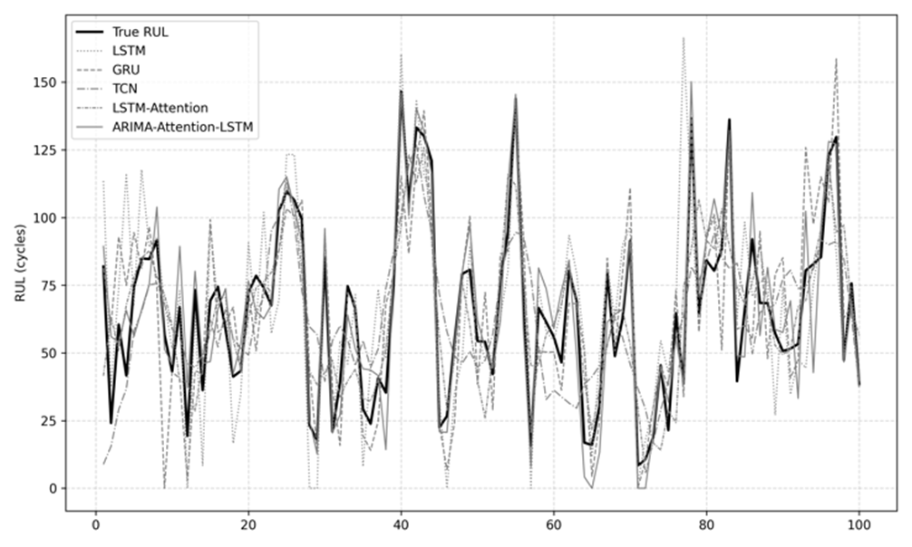
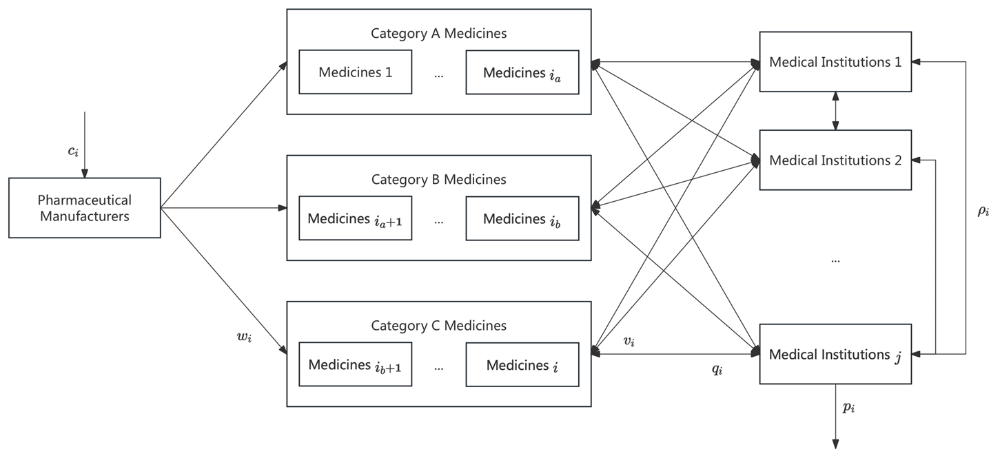
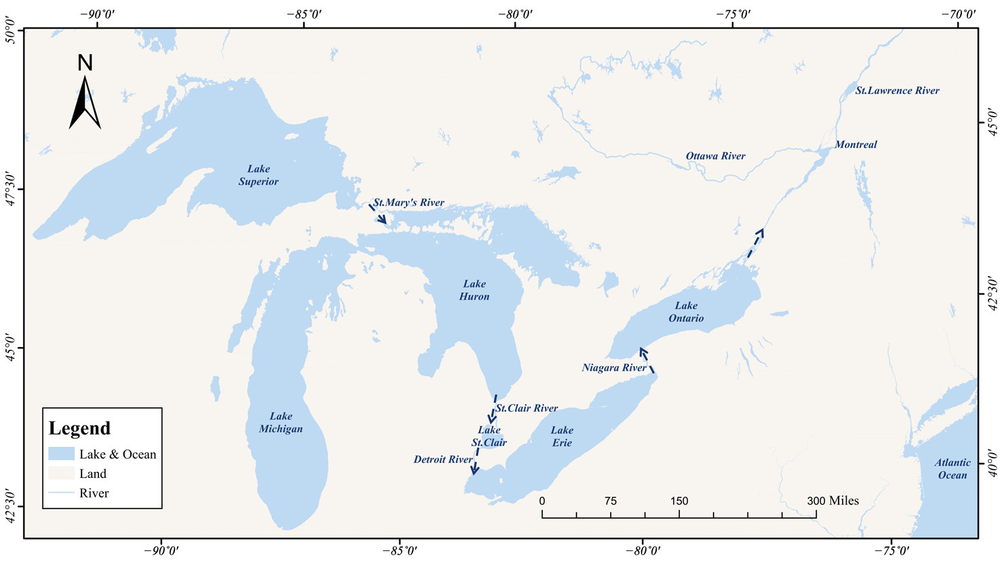

在读
北京林业大学
经济管理学院
农林经济管理 · 直博生
北京林业大学·经济管理学院·农林经济管理
我的研究关注系统可靠性与风险管理。以统计学为基础，结合机器学习与优化方法，探索系统的剩余寿命预测、维护决策与不确定性下的资源配置。
航空发动机寿命预测：结合 ARIMA、LSTM 与多头注意力机制。
DOI: 10.1109/ACCESS.2026.3676626
考虑保质期、库存约束与转运机制，研究医药供应链的联合订货优化。
DOI: 10.3390/math14020302
结合多目标规划与模糊控制，在五大湖水位管理中平衡不同利益主体的需求。
DOI: 10.3390/su17083690
| 日期 | 名称 | 类型 | 登记/公开号 | 署名 |
|---|---|---|---|---|
| 2025-06-27 | 基于深度强化学习的供暖管道剩余寿命预测与维护方法 | 发明专利公开 | CN120217874A | 第一发明人 |
| 2025-07-09 | 管道寿命预测与预测性维护系统 V1.0 | 软件著作权 | 2025SR1211205 | 第一著作权人 |
| 2025-06-26 | 管道故障预测系统 V1.0 | 软件著作权 | 2025SR1094590 | 第一著作权人 |
| 2025-04-14 | 最佳水位控制仿真系统 V1.0 | 软件著作权 | 2025SR0613071 | 第一著作权人 |
| 2024-11-26 | 基于贪心算法改进的智能排班系统 V1.0 | 软件著作权 | 2024SR1894262 | 第一著作权人 |
| 2024-09-18 | 老年人失能风险评估系统 V1.0 | 软件著作权 | 2024SR1382400 | 第一著作权人 |
| 2024-08-26 | 管道寿命预测与风险管理系统 V1.0 | 软件著作权 | 2024SR1244171 | 第一著作权人 |
| 2025-04-22 | “生物量与时间”图线模拟系统 V1.0 | 软件著作权 | 2025SR0656847 | 第二著作权人 |
| 2025-04-21 | 基于人工蜂群优化算法与MvSL01-SVM联合的多视角分类可视化软件 V1.0 | 软件著作权 | 2025SR0649932 | 第二著作权人 |
| 2025-06-19 | “树木碳储量变化”分析系统 V1.0 | 软件著作权 | 2025SR1045421 | 第三著作权人 |
| 2025-06-18 | “林产碳管家”林产品碳储量计算系统 V1.0 | 软件著作权 | 2025SR1038533 | 第三著作权人 |